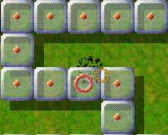
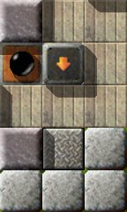
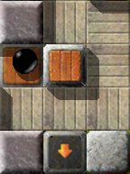
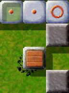

Уровень МесяцаМы хотим каждый месяц больше внимания уделять превосходным уровням. Превосходные уровни это те, у которых средняя оценка пользователей наивысшая и в целом много оценок. Следовательно это Ваш выбор. Поэтому пожалуйста оценивайте уровни, на которых Вы играете и не забывайте присылать Ваши оценки вместе с результатами в конце каждого месяца. Вы можете найти все предыдущие уровни месяца в нашем архиве. Июнь 2008: «Block its way!» от Jon 'WB' SneyersС 26 марта 2008 года всякий раз, когда мне на глаза попадался этот уровень, я не мог сдержать улыбку. Почему? Ну, все довольно просто — но, погодите, давайте обо всем по порядку.

Enigma III # 66
Впервые я попробовал сыграть в этот уровень очень давно, но тогда я скорее просто постучал по камням, чем всерьез попытался его решить. Вот каким мне представился начальный экран:

Не заблокирован …
А теперь давайте начнем. Дверь открыта, дотрагиваемся до одного из нижних импульсных камней, чтобы хотя бы частично заполнить ящиками больший водоем, потом проходим через односторонний проход, подбираем следующую записку, читаем «УДАЧИ!» (Ко мне в сердце закрались опасения, но давайте будем оптимистами …), дотрагиваемся до следующего импульсного камня, открываем первый оксид, не спеша продвигаемся вперед, пока импульсные камни не сбросят в воду деревянные ящики, по пути подбираем еще одну записку, сталкиваем в воду деревянный ящик, чтобы пройти в следующую комнату и взглянуть для чего предназначен болдер. Ага, а вот и он. Я только успел заметить, как болдер пронесся прямо
передо мной и остановился на триггере. Видимо триггер … да, дверь
снова закрыта и уровень уже не решить (F3 перезапускает весь уровень.
Ай!). Кстати, теперь есть время прочесть последнюю записку:
«Поторопитесь!» Ух, кто бы мог подумать?! Попытаемся снова, но на этот раз с большим энтузиазмом, а главное быстрее, в конце концов, рейтинг скорости уровня равен трем. Наконец, у меня получилось, с третьей попытки. Извините, вру — это точно заняло больше времени (если быть честным, я бился над этим уровнем дня два к ряду). Я то был слишком медлителен (снова), то слишком неосторожным (гораздо чаще). Со временем я стал управлять шариком в этой части уровня, практически не размышляя … и однажды пришло время, чтобы решить остаток уровня. А там было все, кроме еще одного напряженного и еще более быстрого паркура: в общем не важно.

Все еще поздно!
Теперь в игру должен вступить белый шарик, в противном случае черному теперь здесь делать нечего — деревянный блок преграждает дальнейший путь. После этого давайте белым шариком немного 'попрыгаем между островами' — нет, прыгать не обязательно. Расположите между четырьмя островами деревянные ящики. Здесь каждый из вас, у кого есть проблемы с отскоком от толкаемых в замкнутом пространстве камней, должен быть осторожным; к счастью трава не мокрая, а песок обычный. После того, как мы с этим справимся, черный и белый шарик будут освобождать путь друг другу. По пути откройте несколько оксидов. Наконец, черный шарик должен проложить себе путь к оставшимся оксидам сквозь ряд деревянных ящиков. Когда все оксиды, кроме последнего будут открыты, черный шарик может отправиться в свой последний путь, чтобы, наконец, решить уровень, дотронувшись до камня-оксида за односторонним камнем начального экрана. Если Вам нравятся «Little Puzzles» и «Big Adventures» как на вид, так и с технической точки зрения, Вы будете чувствовать себя как дома в двух комнатах с правой стороны «Block its way!»; в конце концов, все три уровня написаны тем же автором.

И еще один летальный исход …
На самом деле создается впечатление, что черный шарик, который я,
как игрок, должен использовать в заточении. А совет открыть
«Дверь» звучит как приказ, а когда автор желает мне «удачи»,
она мне обязательно пригодится!
Я увидел несколько импульсных камней, которые могли передвинуть
несколько камней и их «полых» сородичей, которые могут
разрушить катящийся мимо шарик: тренируйте Ваши пальцы!
За «уже» открывшейся дверью я увидел символ инь-янь
и догадался о существовании партнера, который играет важную роль
в решении - белого шарика
Итак, я приступил к игре, проложил путь к символу инь-янь … и неожиданно …
дверь оказалась … закрытой. Неудача? Может здесь есть другой актер?
«Прегради ему путь»? … Кому я должен преградить путь?
Я переключился на белый шарик, освободил его, собрал для него предметы
и … начинающие, стройте мост к главному острову с камнями-оксидами.
Но: как мне снова открыть дверь? Неудача? И что здесь делает болдер?
Может здесь есть переключатели … или волшебная палочка?
Скорость и «правильный» импульс, помогли мне вовремя «решить»
этот уровень с помощью блокировки: «преградить ему путь»! Вы тренируете
свои пальцы?
Это великолепная игра, два шарика, два начальных сценария, и необходимость
делать все четко и быстро, вовремя и ловко. А чтобы держать
«чужого» блокирующего актера на расстоянии: преградите ему путь.
Только тогда дверь останется открытой, до самых победных фанфар,
о чем так категорично напоминает нам первая записка.
Если Вы помните первое предложение этой статьи, то зададитесь вопросом, что, во имя всего святого, такого смешного в этом уровне? На самом деле ничего, если — да, если — игрок действует, как описано выше. Потому что есть еще один вариант, в котором игрок игнорирует паркур в самом начале (большое спасибо за эту подсказку Taztunes). Итак, каждый у кого возникают проблемы, или для кого не важен хороший результат, или кто просто хочет сыграть на хорошем уровне в расслабляющей атмосфере, должен проделать следующее: Осторожно, спойлер!
Откройте дверь с помощью триггера и коснитесь одного из окружающих Вас
импульсных камней, потом подождите пока дверь не закроется (болдер сейчас
находится на триггере), затем просто нажмите на триггер еще раз, и дверь снова
откроется, готово (прочтите сообщение Taztunes о «Block its way!» за
26 марта 2008 года на форуме mag-heut.net).
Конец спойлера И теперь я спрашиваю себя, почему уровень называется «Block its way!» («Прегради ему путь»), почему я должен «Поспешить!», как написано в записке, почему рейтинг скорости уровня равняется 3? Это все просто для отвлечения внимания? Автор просто пошутил над всеми доверчивыми игроками вроде меня (надеюсь он простит меня, если я ошибаюсь)? Если да, я не вижу в этом ничего плохого LOL (*хохот*). В любом случае, я с улыбкой усвоил этот урок. В таких случаях я всегда вспоминаю слова Kurt'а Tucholsky: «Никогда не давайте эксперту повлиять на Вас, когда он говорит: 'Дорогой друг, я делаю так уже двадцать лет!' — он может успешно делать это неправильно все двадцать лет.» И наконец большое 'Спасибо' Jon 'WB' Sneyers за уровень, который — по крайней мере для меня — показывает мою собственную недальновидность. И пожалуйста, оставьте уровень таким, какой он есть, и не исправляйте ничего, по крайней мере, я бы по нему скучал. [Комментарий: Обходной путь не был известен ни команде, ни Jon, пока нам не рассказал о нем Taztunes. Поэтому, рейтинг скорости был приписан равным трем не учитывая обходного пути.]
Этот уровень начался с идеи названия: бег наперегонки с болдером, чтобы
не дать ему нажать роковой триггер. Если я правильно помню, вначале я
хотел создать одноэкранный уровень, где Вы могли видеть, что произойдет,
с самого начала. Но я не рассчитал место для импульсных камней, и конечный
пункт пути болдера оказался на следующем экране. Мне это понравилось,
потому что игрок все еще может видеть болдер, но вначале он и понятия
не имеет, что этот болдер может сделать. Только после того, как игрок
доберется до следующего экрана, он может узнать, что нужно делать.
В любом случае, теперь мне нужно было чем-то заполнить второй экран,
так что я вполне мог сделать уровень еще больше. Мне всегда нравились
уровни для двух шариков, поэтому я решил создать уровень, где сначала
черный шарик решает задачу (преграждает путь болдеру, что требует от
игрока в первую очередь ловкости), затем задачу решает белый шарик,
затем они сообща решают остаток уровня. Для белого шарика я попытался
придумать головоломку, в которой нужно было соединить острова мостами,
причем мосты нужно строить в несколько неожиданных местах.
NObby Уважаемый читатель, нам всегда нужны Ваши статьи о великих уровнях Enigma. Пожалуйста присылайте нам любые статьи, или даже комментарии, которые Вы напишете по следующему адресу: enigma-devel@nongnu.org В частности, нас интересуют статьи о следующих уровнях:
Заранее большое спасибо, только Ваша помощь может сохранить УМ! Ваша команда Enigma |